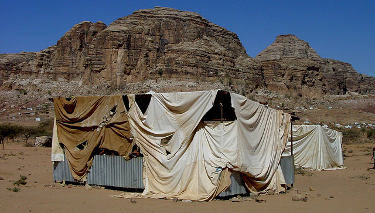
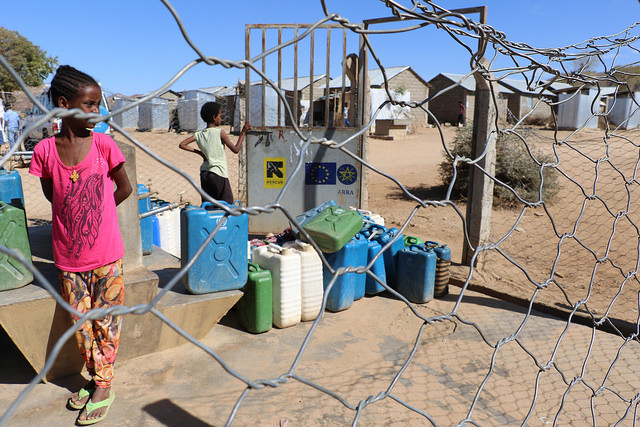

Tournez le bouton de gauche pour écouter les interviews
Appuyez sur les boutons du bas pour changer de chapitre
Chapitre 3 : L’exode, seule révolution possible
Il faisait nuit noire quand Amanuel Ghirmay a traversé la rivière sèche de Mareb qui sépare l’Érythrée de l’Éthiopie ce 15 juin 2009, “le premier jour de diffusion d’Erena”, se souvient-il fièrement. Dix-huit heures à pied avec un groupe d’autres fugitifs, à serpenter à travers canyons et tranchées pour éviter les gardes frontaliers : c’est le prix à payer pour la liberté. “On entendait les soldats, et on voyait leur ombre”, retrace Amanuel. Il avait alors 30 ans. Parti vers 16 heures du village le plus proche de l’Ethiopie , Amanuel n’a franchi le Mareb que vers 10 heures le lendemain, avant de se rendre aux policiers éthiopiens et d’être conduit en camp de réfugiés. “Nous avions peur de se faire attraper et renvoyer en Erythrée” : et pour ces réfugiés d’un des pays les plus fermés au monde, il n’y a pas pire scénario.
“Un officier que je connaissais m’a aidé à sortir du pays”, souffle Amanuel. “Il n’a pas voulu de mon argent : c’était une garantie qu’il n’allait pas me tendre un piège.” Il a tout de même dû donner 1000 euros au passeur, un militaire, qui l’a guidé pendant cette interminable marche.
Sur les 6 millions d’Érythréens recensés, à peine la moitié vit encore en Erythrée
Chaque mois, entre 3 000 et 5000 erythréens fuient leur pays dans l’espoir d’échapper aux griffes de la dictature d’Afwerki : sur les 6 millions d’Érythréens recensés, à peine la moitié vit encore en Erythrée. “Ils sont de plus en plus jeunes”, soutient Amanuel, “ils fuient parfois à 15, 16 ans.” D’après le dernier rapport de l’ONU, 47 025 Érythréens ont demandé l’asile en Europe en 2015, quatre fois plus qu’en 2012.
“Ce n’est pas qu’une migration, c’est un geste politique fort”, affirme Léonard Vincent. Quand on l’interroge, la voix de Fathi Osmane laisse entendre une immense déception : celle d’un espoir brisé. “A 25 ans, je suis retourné en Érythrée. J’aurais pu vivre n’importe où, j’aurais pu faire une carrière ailleurs, mais c’était mon choix”, convient Fathi, qui avait passé son enfance et adolescence au Koweït et au Soudan. “J’écrivais avec une vision. On avait eu notre indépendance tard, et je voulais parler de l’avantage d’être en retard par rapport aux autres pays africains”.
 Camp de réfugié à Tsorona, à la frontière entre l'Ethiopie et l'Erythrée, Flickr/Roberto Madeno
« Après 25 ans, on est devenu le pire »
“On pouvait devenir un pays différent. Mais après 25 ans, on est devenu le pire”, murmure-t-il. “Oh mon dieu, c’est terrible”, dit-il, empli de frustration. “Et j’y ai contribué.” Fathi raconte qu’en 1993, Nelson Mandela avait rencontré le jeune président Afwerki au Caire et lui avait présenté ses choix : “mon fils, tu peux soit être un héros, soit être un zéro.” “Et il est devenu un immense zéro, et notre pays aussi”, reprend Fathi, inconsolable.
Diplomate, Fathi a dû représenter ce gouvernement qu’il ne soutenait pas. “Je savais tout, et il y a certaines choses qui ne me plaisaient vraiment pas”, explique-t-il. “Ce n’était pas le pays pour lequel mon père s’était battu, et ce n’était pas le pays que j’avais imaginé.” Lui-même était membre du mouvement jeune du Front de Libération Nationale. “Alors, j’ai décidé de fuir.”
Un régime “impitoyable envers ses traitres”
La famille de Fathi avait pu le rejoindre en Arabie Saoudite où il était alors ambassadeur de l’Érythrée seulement car son jeune fils de deux ans était malade d’un cancer : “sinon, un diplomate ne peut jamais emmener sa famille, car trop sont partis et ont demandé l’asile”. Mais à leur arrivé, l’ambassade leur a confisqué leurs passeports. Il a rejoint seul la France en 2012 pour demander les papiers nécessaires: pendant ces deux ans d’attente, sa famille était cachée chez sa soeur, ses enfants déscolarisés. “Ils ne pouvaient même pas aller à l’hôpital.” “Fuir n’est jamais une décision facile pour un Érythréen.”
 Un camp de réugié érythréen en Ethiopie, Flickr/European Commission
L’ancien ministre de l’Information, Ali Abdou, qu’on considérait comme le fils adoptif du président a fait défection en novembre 2012. Depuis, sa fille de 16 ans, son frère et son vieux père ont disparu. “C’est un régime impitoyable avec ses traîtres”, acquiesce Léonard Vincent. “J’ai un ami qui a demandé l’asile à la Grande-Bretagne; quelques jours après, ses vieux parents de 80 ans ont été expulsés de leur maison à Asmara.”
Les journalistes d’Erena ne communiquent presque plus avec leurs parents. “De toute manière, toutes les conversations téléphoniques sont écoutées”, esquive Biniam Simon. Il appelle sa famille quelques fois par an : “On se dit bonjour, et on raccroche”.
“Le gouvernement pourrait tracer l’appel, parfois c’est mieux de ne pas appeler”, confirme Amanuel. “On ne parle pas dans les détails. C’est comme dans le livre 1984 (1949) de George Orwell.”
Le 3 octobre 2013, plus de 300 migrants meurent dans un naufrage en méditerranée : seulement deux d’entre eux ne sont pas érythréens. La brève cérémonie en Italie s’est tenue en présence de l’ambassadeur d’Érythrée, ce pays qu’ils avaient justement tenté de fuir.
“J’ai rejeté cette peur quand j’ai traversé la frontière”, confie Amanuel.”Mais il y a un dicton en Érythrée qui dit : ‘la main est longue’. Ils peuvent vous contrôler même à distance.”